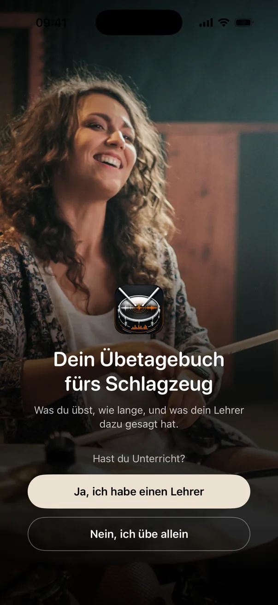
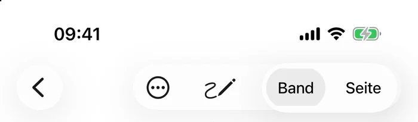

Zurück zur Startseite


Im Browser ausprobieren
Drumbook ausprobieren, ohne etwas zu installieren.
Fünf kurze Stationen, vom ersten Start bis zum Bericht für den Lehrer. Stell den Ton an: In der Session und beim Notenband läuft der Klick zum Mitspielen.

Session
Single Stroke Roll
Abwechselnd rechts, links, rechts, links, gleichmäßig und gleich laut. Langsam anfangen, lieber sauber als schnell.
05:00
von 5 Min geplant
Rest gesamt 05:00
70BPM
Ablauf
Single Stroke Roll
00:00von 05:00
+ Übung hinzufügen
Abschluss
Diese Session
Geübte Zeit0 Sek
Übungen1
Gesamteindruck
Wie lief's?
Was ist dir aufgefallen?
Session gesichert
Morgen wieder um 18:30?
Deine erste Session hast du um 18:37 angefangen. Drumbook erinnert dich dann jeden Tag um diese Zeit.
Danach fragt iOS, ob Drumbook Mitteilungen schicken darf. Ändern kannst du das jederzeit im Menü unter „Erinnerungen“.
130BPM
Takt 1
Nachgebaut aus echten Bildschirmen der App, mit Beispieldaten.
Gefällt dir, was du siehst?
Drumbook läuft auf iPhone und iPad. Zurzeit ist es im Test und kostenlos; die Einladung kommt per Mail.
Kostenlos testen Musterbericht (PDF) Ich unterrichte Schlagzeug